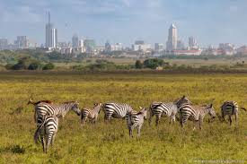

Nairobi
Nairobi is the capital city of Kenya. It is among the most populous city in Eastern Africa, with a metropolitan area of over 7 million inhabitants.
Nairobi is renowned for its tourism. Being a home to wildlife, Nairobi receives many tourists every year.It is also known for its beautiful scenery.
